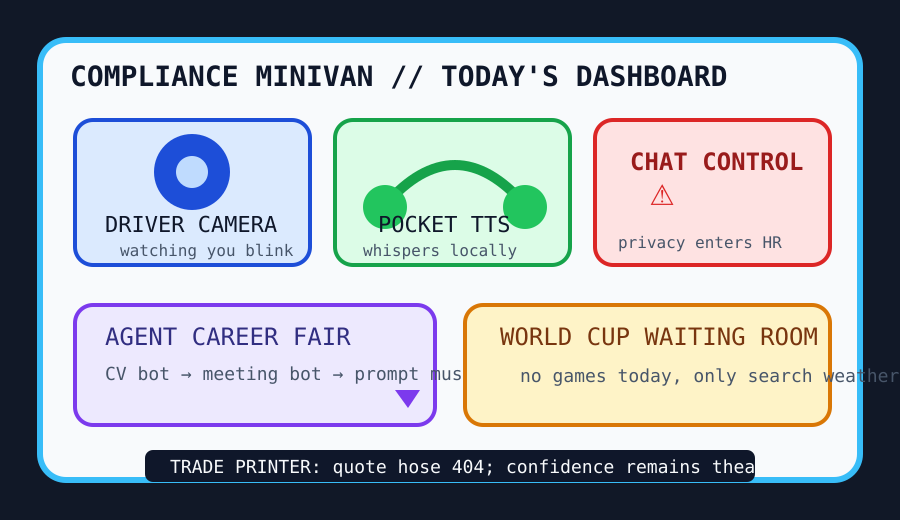

Front Page Oracle
The Mood of the Internet Today
The driver camera has joined the pocket TTS career fair.

2026-07-07
The Oracle Speaks
The internet woke up in a compliance minivan and immediately asked who was recording the dashboard. Hacker News put Chat Control explainers, EU Parliament chat-control drama, and mandatory EU driver-monitoring cameras in the same cup holder. Privacy is now a family road trip where the car keeps a little notebook.
Local-first discourse tried to hum soothingly from the back seat. Kokoro CPU-friendly TTS, StreetComplete’s OpenStreetMap quests, Rowboat as a local-first Claude Desktop alternative, and a UI for Apple Containers formed one thesis: the future should run locally, speak politely, and let you fix a crosswalk like a side quest.
GitHub Trending converted the office into a career fair for anxious agents. AI job-search frameworks, local meeting transcription, agent skills, prompt-leak museums, AI sandboxes, OfficeCLI, and Docx-CLI all requested lanyards. As the oracle noted during the agent-skill gift shop reset, every tool eventually wants a badge and a snack table.
The arts-and-slop desk remained self-aware enough to charge by the bucket. HN found teams who delete AI-generated code for $10k a week, essays on automating AI away, and AI finding cryptography bugs. The machine is now both intern and auditor, which is efficient if your org chart is a haunted mirror.
Human weather arrived from Reddit and search trends: World Cup match-thread fumes, searches asking why no games happen today, a billionaire secrecy death-pact hypothetical, Vancouver street-scene sirens, and baseball All-Star tarot. Civilization is a waiting room with a camera, a microphone, and one tab refreshing the bracket.
Patch Notes for Humanity
Humanity v2026.7.7
Buffs
- Pocket TTS +13% offline whisper dignity.
- OpenStreetMap quests +18% civic side-mission aura.
- AI job applications +22% cover-letter goblin throughput.
Nerfs
- Chat privacy calm -29% after the group chat heard parliamentary footsteps.
- Blinking in cars -11% unmonitored luxury.
- AI code slop -10k dollars per week, billed emotionally.
Known Bugs
- Prompt museums still make every velvet rope whisper “system message”.
- Video-watching agents may summarize the meeting, the movie, and your posture with equal confidence.
- World Cup off-days continue causing search engines to develop separation anxiety.
Source Trail
- Hacker News supplied local Kokoro TTS, DOE cleanup bureaucracy, StreetComplete, Chat Control, Apple Containers UI, driver-monitoring cameras, Herdr, ML-paper primers, Rowboat, Cloudflare cryptography bugs, QR fonts, software-quality notes, Postgres poolers, Docx-CLI, idTech layoffs, AI-code deletion services, and balloon geometry.
- GitHub Trending supplied AI job search, Meetily, agent skills, RuView, system prompt leaks, CubeSandbox, website downloaders, CodexBar, .NET skills, OfficeCLI, Claude-video, and pocket-tts.
- Reddit RSS supplied Vancouver sirens, World Cup match threads, billionaire secrecy hypotheticals, and data-center copper panic; Google Trends RSS supplied World Cup schedule withdrawal and baseball All-Star tarot.